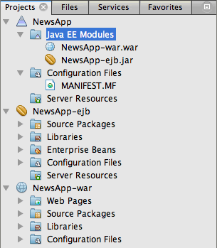
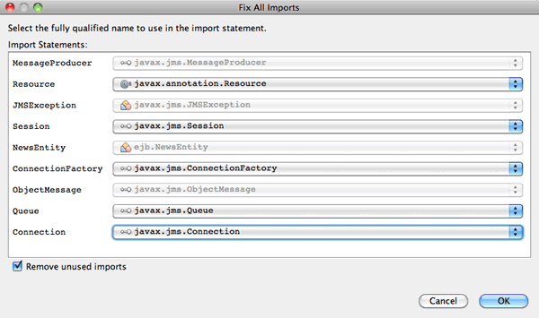

Apache NetBeans
Apache NetBeansLatest release
Criando uma Aplicação Corporativa com o EJB 3.1
| This tutorial needs a review. You can open a JIRA issue, or edit it in GitHub following these contribution guidelines. |
Este tutorial apresenta os conceitos básicos de desenvolvimento de uma aplicação corporativa Java EE 6 e demonstra algumas das funcionalidades da tecnologia EJB 3.1 que foram introduzidos como parte da especificação Java EE 6. Neste tutorial, você criará uma aplicação corporativa que permite a um usuário publicar uma mensagem e recuperá-la de um banco de dados.
A aplicação contém um módulo EJB e um módulo web. O módulo EJB contém uma classe de entidade, uma fachada de sessão para a classe de entidade e um bean baseado em mensagens. O módulo web contém servlets para exibir e publicar mensagens, além de um bean de sessão simples que soma o número de usuários na sessão.
Antes de começar este tutorial, pode ser necessário se familiarizar com o seguinte documento.
Exercícios do Tutorial
Para seguir este tutorial, são necessários os recursos e o software a seguir.
| Software ou Recurso | Versão Necessária |
|---|---|
Versão Java EE 7.2, 7.3, 7.4, 8.0 |
|
versão 7 ou 8 |
|
GlassFish Server Open Source Edition |
3.x, 4.x |
Pré-requisitos
Este tutorial pressupõe que você tenha algum conhecimento básico das tecnologias a seguir, ou alguma experiência de programação com elas:
-
Programação em Java
-
NetBeans IDE
Você pode fazer download de um arquivo compactado zip do projeto finalizado.
Sobre a Aplicação Corporativa NewsApp
Neste tutorial, você criará um exemplo simples de uma aplicação corporativa Java EE 6 com várias camadas denominado NewsApp. A aplicação NewsApp usa algumas das funcionalidades apresentadas na especificação Java EE 6.
A estrutura da aplicação NewsApp corresponde, geralmente, às seguintes camadas.
-
Camada Web. A Camada Web contém a lógica de apresentação da aplicação e é executada no servidor Java EE. Na aplicação NewsApp, a camada Web é representada pelo módulo web e contém servlets que acessam a lógica de negócios no módulo EJB.
-
Camada de Negócios. Aplicações de Camadas de Negócios também são executadas em servidores Java EE e contêm a lógica de negócios da aplicação. Na aplicação NewsApp, a Camada de Negócios é representada pelo módulo EJB. O módulo EJB contém o código que trata as solicitações dos clientes da Camada Web, além de gerenciar transações e como os objetos serão persistidos no banco de dados.
-
Camada EIS. A Camada EIS é a camada de armazenamento persistente da aplicação. Na Aplicação NewsApp, esta camada é representada pelo banco de dados no qual as mensagens estão armazenadas.
Quando você constrói uma aplicação corporativa no IDE, os módulos EJB e aplicação Web são encapsulados em um arquivo compactado EAR que é, em seguida, implantado no servidor. A aplicação será, em seguida, normalmente acessada da Camada do Cliente. A Camada do Cliente é o ambiente em que o cliente é executado e é normalmente um browser web no sistema local do usuário.
| No exemplo deste tutorial, você usará uma única máquina para hospedar o servidor Java EE, o banco de dados e visualizar as páginas web. Em aplicações do enterprise grandes, as diferentes camadas estão, em geral, distribuídas em várias máquinas. As aplicações de Camada Web e Camada de Negócios são geralmente implantadas nos servidores Java EE que estão hospedados em diferentes máquinas. |
Para obter mais detalhes sobre a estrutura de aplicações do enterprise Java EE, consulte o capítulo sobre Aplicações Distribuídas em Várias camadas no Tutorial do Java EE 6, Parte I.
Criando o Projeto da Aplicação Corporativa
O objetivo deste exercício é criar o novo projeto da aplicação corporativa NewsApp. Você usará o assistente Novo Projeto para criar uma aplicação corporativa que contenha um módulo EJB e um módulo web.
-
Selecione Arquivo > Novo Projeto (Ctrl-Shift-N; ⌘-Shift-N no Mac) no menu principal.
-
Selecione Aplicação Corporativa na categoria Java EE e clique em Próximo.
-
Nomeie o projeto de NewsApp e defina a localização do projeto.
-
Desmarque a opção Usar Pasta Dedicada, se ela estiver selecionada. (Para este tutorial, não há motivo para copiar as bibliotecas de projeto em uma pasta dedicada, pois você não precisará compartilhar bibliotecas com outros usuários ou projetos). Clique em Próximo.
-
Defina o servidor como GlassFish Server e defina a versão do Java EE para Java EE 6 ou Java EE 7.
-
Selecione Criar Módulo EJB e Criar Módulo de Aplicação Web. Clique em Finalizar.
-

Figure 1. Assistente Novo Projeto
Quando você clica em Finalizar, o IDE cria três projetos: NewsApp, NewsApp-ejb e NewsApp-war. Se expandir o nó NewsApp na janela Projetos, você poderá ver que o projeto da aplicação corporativa não contém nenhum código-fonte. Todos os códigos-fonte estarão contidos nos dois módulos que o assistente criou e que estão listados no nó Módulos Java EE.
O projeto de aplicação corporativa só contém detalhes de configuração e encapsulamento sobre a aplicação. Quando você cria e executa uma aplicação corporativa, o IDE cria um archive EAR e implanta o EAR no servidor. Em alguns casos, o projeto de aplicação corporativa conterá os arquivos do descritor de implantação com informações adicionais, mas esses arquivos não serão necessários durante a criação de uma aplicação corporativa Java EE que seja implantado no GlassFish Server.

Figure 2. Janela Projetos mostrando a estrutura da aplicação
Codificando o Módulo EJB
Neste exercício, você criará uma classe de entidade, um bean de sessão baseado em mensagens e uma fachada de sessão no módulo EJB. Você também criará uma unidade de persistência para fornecer ao contêiner informações sobre a fonte de dados e como as entidades são gerenciadas, bem como os recursos Java Message Service (JMS) que são usados pelo bean baseado em mensagens.
Criando a Classe de Entidade
Neste exercício, você criará a classe de entidade NewsEntity . Uma classe de entidade é uma classe Java simples que geralmente representa uma tabela em um banco de dados. Quando você cria a classe de entidade, o IDE adiciona a anotação @Entity para definir a classe como uma classe de entidade. Depois de criar a classe, você criará campos na classe para representar os dados que deseja incluir na tabela.
Cada classe de entidade deve ter uma chave primária. Quando você cria a classe de entidade, o IDE adiciona a anotação @Id para declarar o campo a ser usado como chave primária. O IDE também adiciona a anotação @GeneratedValue e especifica a estratégia de geração de chave para o Id primário.
Para criar a classe NewsEntity , execute as seguintes etapas.
-
Clique com o botão direito do mouse no módulo EJB na janela Projetos e selecione Novo > Outro para abrir o assistente Novo arquivo.
-
Na categoria Persistência, selecione Classe de Entidade e clique em Próximo.
-
Digite NewsEntity para Nome da Classe.
-
Digite ejb para o Pacote.
-
Deixe Tipo de Chave Primária como
Longono assistente Nova Classe de Entidade. -
Selecione Criar Unidade de Persistência. Clique em Próximo.
-
Preserve o Nome default da Unidade de Persistência.
-
Para o Provedor de Persistência, selecione
EclipseLink (JPA2.0)(default). -
Para Fonte de Dados, selecione uma fonte de dados (por exemplo, selecione
jdbc/samplese quiser usar JavaDB). -
Confirme que a unidade de persistência está utilizando a Java Transaction API e que Estratégia de Geração de Tabela está definida como Criar, de forma que as tabelas com base nas suas classes de entidade serão criadas quando a aplicação for implantada.

Figure 3. Provedor e painel de Banco de Dados
-
Clique em Finalizar.
Quando você clica em Finalizar, o IDE cria persistence.xml e a classe de entidade NewsEntity.java . O IDE abre NewsEntity.java no Editor de Código-Fonte.
No Editor de Código-Fonte, execute as etapas a seguir.
-
Adicione as seguintes declarações de campo à classe:
private String title;
private String body;-
Clique com o botão direito do mouse no Editor de Código-Fonte e selecione Inserir Código (Alt-Insert; Ctrl-I no Mac) e selecione Getter e Setter para abrir a caixa de diálogo Gerar Getters e Setters.
-
Selecione os campos
bodyetitlena caixa de diálogo. Clique em Gerar.

Figure 4. Caixa de diálogo Gerar Getters e Setters
Quando você clica em Gerar, o IDE adiciona os métodos getter e setter nos campos.
-
Salve as alterações em
NewsEntity.java.
Você pode fechar NewsEntity.java .
Para saber mais sobre classes de entidade, consulte o capítulo Introdução à Java Persistence API no Tutorial do Java EE 6 , Parte I.
Criando o Bean Baseado em Mensagens
Neste exercício, você usará um assistente para criar o bean baseado em mensagens no módulo EJB. O assistente também o ajudará a criar os recursos JMS necessários. O bean baseado em mensagens recebe e processa mensagens enviadas para a fila por um servlet no módulo Web.
Para criar o bean baseado em mensagens, execute as seguintes etapas:
-
Clique com o botão direito do mouse no módulo EJB na janela Projetos e selecione Novo > Outro para abrir o assistente Novo arquivo.
-
Na categoria Enterprise JavaBens, selecione o tipo de arquivo Bean Baseado em Mensagens. Clique em Próximo.
-
Digite NewMessage para Nome EJB.
-
Selecione
ejbna lista drop-down Pacote. -
Clique no botão Adicionar ao lado do campo Destino do Projeto para abrir a caixa de diálogo Adicionar Destino da Mensagem.
-
Na caixa de diálogo Adicionar Destino da Mensagem, digite jms/NewMessage e selecione Fila como o tipo de destino. Clique em OK.
-
Confirme se o destino do projeto está correto. Clique em Finalizar.

Figure 5. Assistente Novo Bean Baseado em Mensagens
Quando você clica em Finalizar, a classe NewMessage.java do bean será aberta no Editor de Código-Fonte. Você pode ver que o IDE adicionou a anotação @MessageDriven e as propriedades de configuração à classe.
@MessageDriven(mappedName = "jms/NewMessage", activationConfig = {
@ActivationConfigProperty(propertyName = "acknowledgeMode", propertyValue = "Auto-acknowledge"),
@ActivationConfigProperty(propertyName = "destinationType", propertyValue = "javax.jms.Queue")
})
public class NewMessage implements MessageListener {A anotação @MessageDriven informa ao contêiner que o componente é um bean baseado em mensagens e especifica o recurso JMS usado pelo bean. Quando o IDE gera a classe, o Nome Mapeado do recurso ( jms/NewMessage ) é derivado do nome da classe ( NewMessage.java ). O recurso JMS é mapeado para o nome JNDI do destino do qual o bean recebe mensagens. O assistente Novo Bean Baseado em Mensagens também adiciona as informações dos recursos JMS ao glassfish-resources.xml . Não é necessário configurar os descritores de implantação para especificar os recursos JMS. Se usar a ação Executar no IDE para implantar a aplicação no GlassFish, os recursos JMS serão criados no servidor na implantação.
As especificações do EJB permitem que você use anotações para introduzir recursos diretamente em uma classe. Agora você usará anotações para introduzir o recurso MessageDrivenContext em sua classe e, em seguida, injetar o recurso PersistenceContext , que será usado pela EntityManager API para gerenciar as instâncias de entidade persistentes. Você adicionará as anotações à classe no Editor de Código-Fonte.
-
Injetamos o recurso
MessageDrivenContextna classe adicionando o seguinte campo anotado (em negrito) à classe:
public class NewMessage implements MessageListener {
*@Resource
private MessageDrivenContext mdc;*-
Introduza o gerenciador de entidades na classe clicando com o botão direito do mouse no código e selecionando Inserir Código (Alt-Insert; Ctrl-I no Mac), e selecionando Usar Gerenciador de Entidades no menu pop-up. O IDE adiciona a seguinte anotação
@PersistenceContextao seu código-fonte.
@PersistenceContext(unitName = "NewsApp-ejbPU")
private EntityManager em;O IDE também gera o seguinte método persist .
public void persist(Object object) {
em.persist(object);
}-
Modifique o método
persistpara alterar o nome parasave. O método deve ter uma aparência semelhante a esta:
public void *save*(Object object) {
em.persist(object);
}-
Modifique o método
onMessageadicionando o seguinte código (em negrito) ao corpo do método.
public void onMessage(Message message) {
*ObjectMessage msg = null;
try {
if (message instanceof ObjectMessage) {
msg = (ObjectMessage) message;
NewsEntity e = (NewsEntity) msg.getObject();
save(e);
}
} catch (JMSException e) {
e.printStackTrace();
mdc.setRollbackOnly();
} catch (Throwable te) {
te.printStackTrace();
}*
}-
Clique com o botão direito do mouse no editor e escolha Corrigir Importações (Alt-Shift-I; ⌘-Shift-I no Mac) para gerar quaisquer instruções de importação necessárias. Salve as alterações.
Quando geramos as instruções de importação, queremos *garantir a importação das bibliotecas javax.jms e javax.annotation.Resource *.
|
Para obter mais detalhes sobre beans baseados em mensagens, consulte o capítulo O que é um Bean Baseado em Mensagem? no Tutorial do Java EE 6 , Parte I.
Criando a Fachada da Sessão
Neste exercício, você criará uma fachada de sessão para a classe de entidade NewsEntity. A especificação EJB 3.0 simplificou a criação de beans de sessão reduzindo a quantidade de códigos necessários e permitindo o uso de anotações para declarar uma classe como um Bean de sessão. A especificação EJB 3.1 simplifica ainda mais os requisitos dos beans de sessão, ao tornar opcionais as interfaces de negócios. Os beans de sessão podem ser acessados por clientes locais por meio de uma interface local ou de uma view sem interface. Neste tutorial, você não criará uma interface para o bean. Os servlets da aplicação web acessarão o bean usando uma view sem interface.
Para criar a fachada de sessão, execute as seguintes etapas:
-
Clique com o botão direito do mouse no módulo EJB e escolha Novo > Outro.
-
Na categoria Persistência, selecione Beans de Sessão em Classes de Entidade. Clique em Próximo.
-
Selecione
ejb.NewsEntityna lista de classes de entidades disponíveis e clique em Adicionar para mover a classe para o painel Classes de Entidades Selecionadas. Clique em Próximo. -
Verifique se o Pacote está definido como
ejb. Clique em Finalizar.

Figure 6. Assistente Novo Bean Baseado em Mensagens
Quando você clica em Finalizar, o IDE gera a classe de fachada da sessão NewsEntityFacade.java e AbstractFacade.java , e abre os arquivos no editor. Como podemos ver no código gerado, a anotação @Stateless é usada para declarar a classe NewsEntityFacade.java como um componente de bean de sessão sem estado. O IDE também adiciona a anotação PersistenceContext para injetar o recurso diretamente no componente do bean de sessão. NewsEntityFacade.java estende AbstractFacade.java , que contém a lógica de negócio e gerencia a transação.
| Interfaces remotas ainda são necessárias, se os beans forem ser acessados por clientes remotos. |
Para obter mais informações sobre beans de sessão, consulte o capítulo O que é um Bean de Sessão? no Tutorial do Java EE 6, Parte I.
Codificando o Módulo Web
Nesta seção, você criará dois servlets no módulo Web. O servlet ListNews recupera as mensagens do banco de dados usando a fachada de entidade no módulo EJB. O servlet PostMessage é usado para enviar mensagens JMS.
Nesta seção, você criará também um bean de sessão simples no módulo web que contará o número de usuários que estão atualmente na sessão. A especificação EJB 3.1 permite criar enterprise beans em aplicações Web. Antes do EJB 3.1, todos os enterprise beans tinham que estar em módulos EJB.
Criando o Bean de Sessão Único
A especificação EJB 3.1 introduz a anotação @Singleton que permite criar facilmente beans de sessão únicos. O EJB 3.1 também define anotações adicionais para a configuração de propriedades de beans de sessão únicos como quando o bean é instanciado.
Depois que o bean de sessão único é instanciado, ele existirá durante o ciclo de vida da aplicação. Como o seu próprio nome diz, pode haver somente uma única instância de um bean de sessão único na aplicação. Como os beans de sessão sem estado, os beans de sessão únicos podem ter vários clientes.
Para criar o bean da sessão único, execute as seguintes etapas.
-
Clique com o botão direito do mouse no módulo Web e selecione Novo > Outro para abrir o assistente Novo Arquivo.
-
Selecione o Bean de Sessão na categoria Enterprise JavaBeans. Clique em Próximo.
-
Digite SessionManagerBean para Nome EJB.
-
Digite ejb para o nome do Pacote.
-
Selecione Único. Clique em Finalizar.

Figure 7. Criando um bean de sessão único no assistente Novo Bean de Sessão
Quando você clica em Finalizar, o IDE gera a classe do bean de sessão único e abre a classe no Editor. Você pode ver que o IDE adicionou a anotação @Singleton à classe para declarar um bean de sessão único. O assistente também anotou a classe com @LocalBean .
@Singleton
@LocalBean
public class SessionManagerBean {
}-
Anote a classe com
@WebListenere implementeHttpSessionListener.
@Singleton
@LocalBean
*@WebListener*
public class SessionManagerBean *implements HttpSessionListener*{
}A anotação @WebListener é parte da API do Servlet 3.0 e permite implementar um listener diretamente no seu código.
Quando você implementa HttpSessionListener , o IDE exibe uma advertência na margem.
-
Clique no emblema de advertência na margem esquerda e selecione "Implementar todos os métodos abstratos".

Figure 8. Dica do editor para implementar métodos abstratos
O IDE adiciona os métodos sessionCreated e sessionDestroyed .
-
Adicione o campo estático
countere defina o valor inicial como0.
@LocalBean
@WebListener
public class SessionManagerBean implements HttpSessionListener{
*private static int counter = 0;*-
Modifique os corpos gerados dos métodos
sessionCreatedesessionDestroyedpara aumentar o valor de um campo quando uma nova sessão for iniciada e para diminuir o valor quando uma sessão for finalizada. O valor será armazenado no campocounter.
public void sessionCreated(HttpSessionEvent se) {
*counter++;*
}
public void sessionDestroyed(HttpSessionEvent se) {
*counter--;*
}-
Adicione o método a seguir, que retorna o valor atual de
counter.
public int getActiveSessionsCount() {
return counter;
}Você chamará este método de um servlet para exibir o número atual de usuários/sessões abertas.
-
Salve as alterações.
O código para o bean de sessão deve ter agora a seguinte aparência.
@Singleton
@LocalBean
@WebListener
public class SessionManagerBean implements HttpSessionListener {
private static int counter = 0;
public void sessionCreated(HttpSessionEvent se) {
counter++;
}
public void sessionDestroyed(HttpSessionEvent se) {
counter--;
}
public int getActiveSessionsCount() {
return counter;
}
}Para obter mais detalhes sobre beans de sessão únicos, consulte o capítulo O que é um Bean de Sessão? no Tutorial do Java EE 6 , Parte I.
Criando o Servlet ListNews
Neste exercício, você criará um servlet simples para exibir as mensagens armazenadas. Você usará anotações para chamar o Enterprise Bean NewsEntityFacade do servlet.
-
Clique com o botão direito do mouse em um projeto de módulo web e selecione Novo > Servlet.
-
Digite ListNews para o Nome da Classe.
-
Insira web como o nome do Pacote. Clique em Finalizar.
Quando você clicar em Finalizar, a classe ListNews.java irá se abrir no Editor de Código-Fonte. No editor de código-fonte, execute as etapas a seguir.
-
Clique com o botão direito do mouse no editor de código-fonte, selecione Inserir Código (Alt-Insert; Ctrl-I no Mac) e selecione Chamar Enterprise Bean.
-
Na caixa de diálogo Chamar Enterprise Bean, expanda o nó NewsApp-ejb e selecione NewEntityFacade. Clique em OK.
O IDE adiciona a anotação @EJB para injetar o enterprise bean.
-
Use a caixa de diálogo Chamar Enterprise Bean novamente para injetar SessionManagerBean no nó NewsApp-war.
Você verá no seu código as seguintes anotações que injetam os dois enterprise beans.
@WebServlet(name = "ListNews", urlPatterns = {"/ListNews"})
public class ListNews extends HttpServlet {
@EJB
private SessionManagerBean sessionManagerBean;
@EJB
private NewsEntityFacade newsEntityFacade;Você também pode ver que a anotação @WebServlet é usada para declarar a classe um servlet e especificar o nome do servlet. A anotação @WebServlet faz parte da API do Servlet 3.0 introduzida na especificação Java EE 6. Você pode identificar os servlets usando a anotação, em vez de no descritor de implantação web.xml . A aplicação NewsApp não contém web.xml .
-
No método
processRequest, adicione o seguinte código (em negrito) para retornar a sessão atual ou criar uma nova sessão.
protected void processRequest(HttpServletRequest request, HttpServletResponse response)
throws ServletException, IOException {
*request.getSession(true);*
response.setContentType("text/html;charset=UTF-8");-
Adicione o seguinte código (em negrito) ao método
processRequestpara imprimir as mensagens e adicionar um link ao servlet PostMessage. (Remova os comentários do código no método, se necessário.)
out.println("<h1>Servlet ListNews at " + request.getContextPath () + "</h1>");
*List news = newsEntityFacade.findAll();
for (Iterator it = news.iterator(); it.hasNext();) {
NewsEntity elem = (NewsEntity) it.next();
out.println(" <b>"+elem.getTitle()+" </b><br />");
out.println(elem.getBody()+"<br /> ");
}
out.println("<a href='PostMessage'>Add new message</a>");*
out.println("</body>");-
Adicione o código seguinte (em negrito) para recuperar e imprimir o número de usuários/sessões abertas.
out.println("<a href='PostMessage'>Add new message</a>");
*out.println("<br><br>");
out.println(sessionManagerBean.getActiveSessionsCount() + " user(s) reading the news.");*
out.println("</body>");-
Pressione Ctrl-Shift-I para gerar as instruções de importação necessárias para a classe. Ao gerar as instruções de importação, você deseja *importar as bibliotecas
java.util*. -
Salve as alterações feitas no arquivo.
Criando o Servlet PostMessage
Neste exercício, você criará o servlet PostMessage que será usado para enviar mensagens. Você usará anotações para injetar os recursos JMS que criou diretamente no servlet, especificando o nome da variável e o nome para o qual é mapeado. Em seguida, você adicionará o código para enviar a mensagem JMS e o código para o form HTML para adicionar uma mensagem.
-
Clique com o botão direito do mouse em um projeto de módulo web e selecione Novo > Servlet.
-
Digite
PostMessagepara Nome da Classe. -
Insira
webpara nome do Pacote e clique em Finalizar.
Quando você clica em Finalizar, a classe PostMessage.java se abrirá no editor de código-fonte. No editor de código-fonte, execute as etapas a seguir.
-
Use anotações para injetar os recursos
ConnectionFactoryeQueueadicionando as seguintes declarações de campo (em negrito):
@WebServlet(name="PostMessage", urlPatterns={"/PostMessage"})
public class PostMessage extends HttpServlet {
*@Resource(mappedName="jms/NewMessageFactory")
private ConnectionFactory connectionFactory;
@Resource(mappedName="jms/NewMessage")
private Queue queue;*-
Agora você insere o código para enviar as mensagens JMS adicionando o seguinte código em negrito ao método
processRequest:
response.setContentType("text/html;charset=UTF-8");
// Add the following code to send the JMS message
*String title=request.getParameter("title");
String body=request.getParameter("body");
if ((title!=null) && (body!=null)) {
try {
Connection connection = connectionFactory.createConnection();
Session session = connection.createSession(false, Session.AUTO_ACKNOWLEDGE);
MessageProducer messageProducer = session.createProducer(queue);
ObjectMessage message = session.createObjectMessage();
// here we create NewsEntity, that will be sent in JMS message
NewsEntity e = new NewsEntity();
e.setTitle(title);
e.setBody(body);
message.setObject(e);
messageProducer.send(message);
messageProducer.close();
connection.close();
response.sendRedirect("ListNews");
} catch (JMSException ex) {
ex.printStackTrace();
}
}*
PrintWriter out = response.getWriter();-
Adicione as linhas a seguir (em negrito) ao método
processRequestpara adicionar o form web para adicionar uma mensagem. (Remova o comentário do código para imprimir o HTML, se necessário.)
out.println("Servlet PostMessage at " + request.getContextPath() + "</h1>");
// The following code adds the form to the web page
*out.println("<form>");
out.println("Title: <input type='text' name='title'><br/>");
out.println("Message: <textarea name='body'></textarea><br/>");
out.println("<input type='submit'><br/>");
out.println("</form>");*
out.println("</body>");-
Pressione Ctrl-Shift-I para gerar as instruções de importação necessárias para a classe.
ao selecionar bibliotecas para importação para Connection , ConnectionFactory , Session e Queue , *certifique-se de importar as bibliotecas javax.jms *.
|

Figure 9. Selecione as bibliotecas JMS na caixa de diálogo Corrigir Todas as Importações
-
Salve as alterações feitas no arquivo.
Executando o Projeto
Você agora pode executar o projeto. Quando executamos o projeto, queremos que o browser abra a página com o servlet ListNews. Para isso, especificamos o URL na caixa de diálogo Propriedades da aplicação corporativa. O URL é relativo ao caminho de contexto da aplicação. Após inserirmos o URL relativo, poderemos construir, implantar e executar a aplicação a partir da janela Projetos.
Para definir o URL relativo e executar a aplicação, faça o seguinte:
-
Na janela Projetos, clique com o botão direito do mouse no nó da aplicação corporativa NewsApp e selecione Propriedades no menu pop-up.
-
Selecione Executar no painel Categorias.
-
No campo de texto do URL relativo, digite /ListNews.
-
Clique em OK.
-
Na janela Projetos, clique com o botão direito do mouse no nó da aplicação corporativa NewsApp e selecione Executar.
Quando você executa o projeto, o servlet ListNews é aberto no browser e exibe uma lista das mensagens no banco de dados. Quando você executa o projeto pela primeira vez, o banco de dados está vazio, mas você pode clicar em Adicionar Mensagem para adicionar uma mensagem.

Figure 10. A página do Servlet ListNews
Quando você adiciona uma mensagem com o servlet PostMessage , a mensagem é enviada para o bean baseado em mensagens para gravar em armazenamento persistente e o servlet ListNews é chamado para exibir as mensagens no banco de dados. A lista de mensagens no banco de dados recuperada por ListNews em geral ainda não contém a nova mensagem, porque o serviço de mensagens é assíncrono.
Fazendo Download do Projeto da Solução
Você pode fazer o download da solução para este projeto como um projeto das seguintes formas.
-
Faça download de um arquivo compactado zip do projeto finalizado.
-
Faça o check-out do código-fonte do projeto das Amostras do NetBeans ao executar as etapas a seguir:
-
Escolha Equipe > Subversion > Efetuar check-out no menu principal.
-
Na caixa de diálogo Efetuar Check-out, insira o Repositório URL a seguir:
https://svn.netbeans.org/svn/samples~samples-source-codeClique em Próximo.-
Clique em Procurar para abrir a caixa de diálogo Procurar Pastas do Repositório.
-
Expanda o nó raiz e selecione samples/javaee/NewsAppEE6. Clique em OK.
-
Especifique a Pasta Local para o códigos-fonte (a pasta local precisa estar vazia).
-
Clique em Finalizar.
-
-
Quando você clica em Finalizar, o IDE inicializa a pasta local como um repositório Subversion e verifica os códigos-fonte do projeto.
-
Clique em Abrir Projeto na caixa de diálogo exibida quando o check-out for concluído.
Observações.
-
É necessário um cliente Subversion para verificar os códigos-fonte. Para saber mais sobre a instalação do Subversion, consulte a seção Configurando o Subversion no Guia do Subversion no NetBeans IDE.
Solução de Problemas
A seguir estão alguns dos problemas que você poderá encontrar ao criar o projeto.
Problema com os Recursos JMS
Ao usar o assistente para criar recursos JMS, você poderá receber a seguinte mensagem de erro na janela de saída:
[com.sun.enterprise.connectors.ConnectorRuntimeException:
JMS resource not created : jms/Queue]Esta mensagem pode indicar que o recurso JMS não foi criado ou não foi registrado no servidor de aplicações. Você pode usar a Console de Admin do servidor de aplicações para verificar, criar e editar recursos JMS.
Para abrir a Console Admin, faça o seguinte:
-
Confirme se o servidor de aplicações está sendo executado, expandindo o nó Servidores na janela Serviços do IDE. Uma pequena seta verde ao lado do nó do servidor de aplicações indica que o servidor está sendo executado.
-
Clique com o botão direito do mouse no nó do servidor de aplicações e selecione Exibir Console Admin para abrir a janela de log-in no browser.
-
Faça log-in no servidor. O nome de usuário e a senha default são
admineadminadmin. -
Na Console Admin no browser, expanda o nó Recursos e o nó Recursos JMS no quadro à esquerda.
-
Clique nos links Fábricas de Conexão e Recursos de Destino no quadro à esquerda para verificar se os recursos estão registrados no servidor e, se necessário, modifique os recursos. Se os recursos não existirem, crie-os na Console Admin.
Certifique-se de que o recurso de fábrica de conexões JMS no servlet PostMessage esteja mapeado para o nome JNDI correto do recurso de fábrica de conexões JMS registrado no Servidor de Aplicações Sun Java System.
Os seguintes recursos devem estar registrados no Servidor de Aplicações Sun Java System:
-
um recurso de Destino com o nome JNDI
jms/NewMessagee digitejavax.jms.Queue -
um recurso de Fábrica de Conexões com o nome JNDI
jms/NewMessageFactorye digitejavax.jms.QueueConnectionFactory
Consulte Também
Para obter mais informações sobre o uso do NetBeans IDE para desenvolver aplicações Java EE, consulte os seguintes recursos:
Para obter mais informações sobre o uso de enterprise beans, consulte o Tutorial do Java EE 7.
Para enviar comentários e sugestões, obter suporte e se manter informado sobre os mais recentes desenvolvimentos das funcionalidades de desenvolvimento do Java EE do NetBeans IDE, inscreva-se na lista de correspondência de nbj2ee.